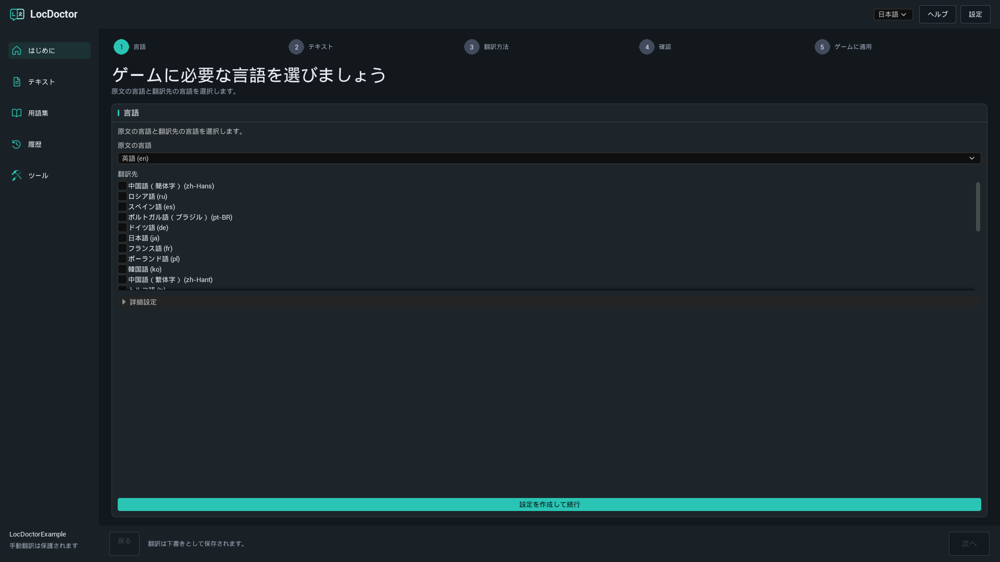
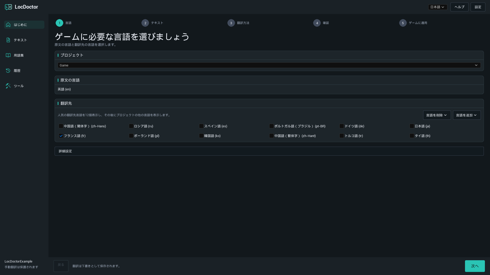
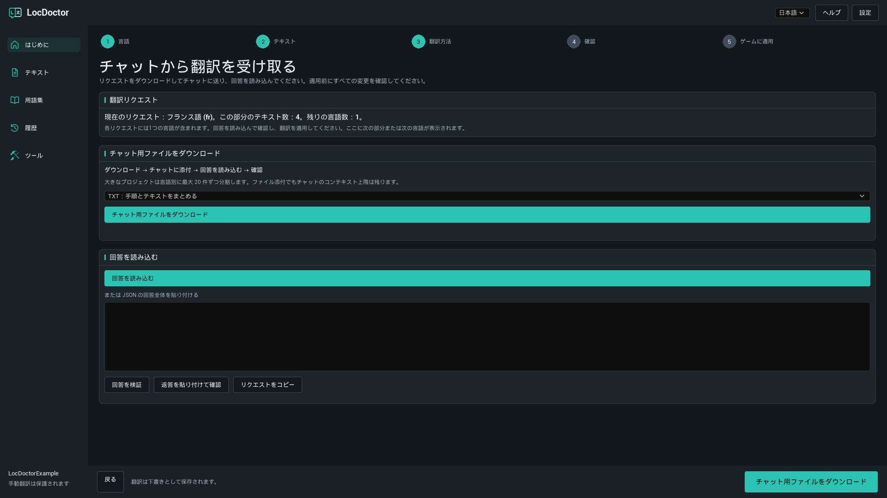
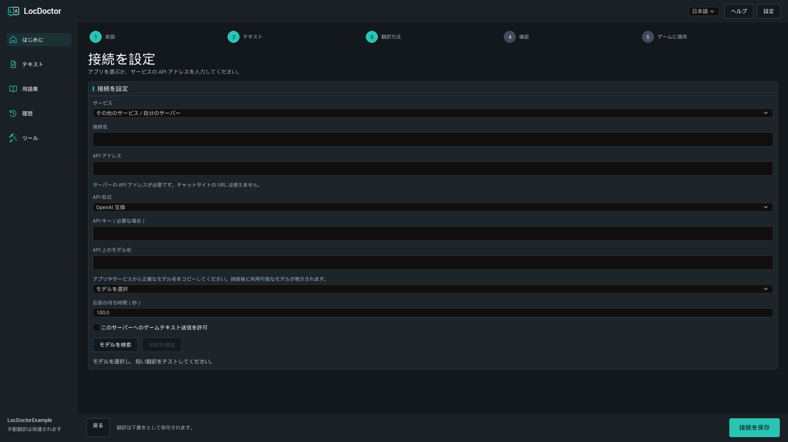
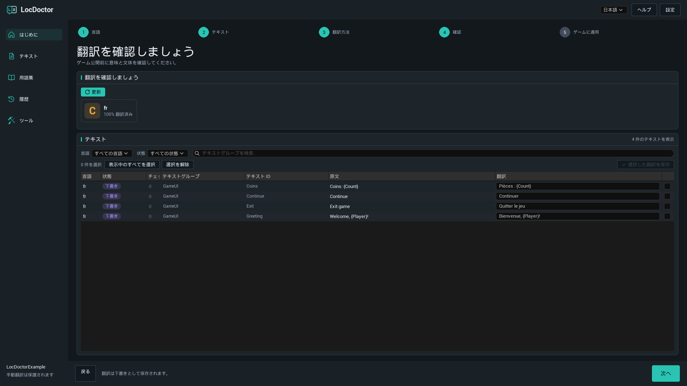
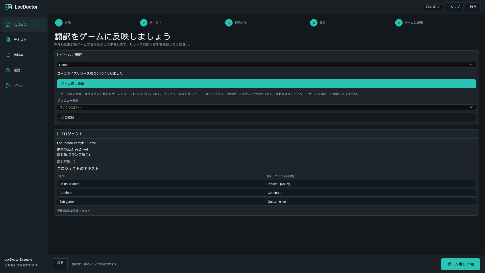

LOCDOCTOR 1.0.0 ユーザーガイド
ゲームを翻訳。
言葉の仕上がりまで、自分で管理。
ローカルモデル、自分の AI チャット、または API サービスで Unreal Engine のゲームテキストを翻訳します。エディタで結果を確認し、ゲーム用のリソースを準備しましょう。
すでに利用できる方法を選びましょう
はじめに
インストール
LocDoctor 1.0.0 は 64 ビット Windows 上の Unreal Engine 5.7 と 5.8 に対応しています。エンジンのバージョンに合ったパッケージを使ってください。
Fab からインストール
Epic Games Launcher の Fab ライブラリから、使用するエンジン向けのプラグインをインストールします。プロジェクトを開き、必要に応じて Edit > Plugins で LocDoctor を有効にし、エディタを再起動してください。
ZIP からインストール
- Unreal Editor を閉じます。
LocDoctor.upluginが<YourProject>/Plugins/LocDoctor/の直下に置かれるように展開します。ZIP にLocDoctorフォルダが含まれている場合は、そのフォルダをPlugins内に置いてください。- プロジェクトを開きます。必要に応じて Edit > Plugins で LocDoctor を有効にし、エディタを再起動します。
- Tools > LocDoctor を開きます。
YourProject/
YourProject.uproject
Plugins/
LocDoctor/
LocDoctor.uplugin
Resources/
Source/コンパイル済みファイルを含むパッケージには Binaries フォルダもあります。ソースコードのみのパッケージでは、エディタモジュールのビルドに Unreal と互換性のある C++ ビルドツールが必要です。
はじめに
初めての翻訳
まずは 1 言語と少量のゲームテキストで試してください。このガイドのプラグインのボタン名は、ドキュメントの言語に合わせています。Unreal Editor 自体のメニュー名は英語で示しています。
- 言語を選びます。Tools > LocDoctor を開きます。ゲームの原文の言語と、少なくとも 1 つの翻訳先を選びます。初回は 設定を作成して続行 をクリックしてください。別のアセットフォルダやローカライズターゲットが必要でなければ、詳細設定は初期値のままで構いません。
- テキストを収集します。テキスト ステップで テキストを収集 をクリックします。Unreal に求められた場合は、変更したゲームアセットを保存してください。プロジェクトの概要に必要なテキストが含まれているか確認します。
- 翻訳方法を選びます。自分のパソコンで、自分のチャットで、または API 経由で を使います。自動翻訳ではモデルを選択し、接続を確認 をクリックして短い試験翻訳を行います。成功すると、メインボタンが テキストを翻訳 に変わります。
- 結果を確認します。AI 翻訳は下書きとして保存されます。確認 ステップで各翻訳を読み、必要に応じて修正してから、選択した行を保存してください。
- ゲーム用に準備します。ゲームに適用 で ゲーム用に準備 をクリックします。各言語でゲームをテストし、パッケージ設定 に対象の言語を含めてください。

言語とゲームテキスト
原文の言語、翻訳先、表示言語
- 原文の言語：ゲームの原文が書かれている言語です。
- 翻訳先：現在の翻訳ジョブで処理する言語です。チェックを外すと、その言語を今回のジョブから除外できます。
- 表示言語：LocDoctor 上部の選択欄です。プラグインの表示言語だけを変更します。初期設定は英語です。
ローカライズターゲットは通常 Game という名前で、一連のテキストに対する Unreal のローカライズ設定を管理します。プロジェクトに複数ある場合は、翻訳するターゲットを選んでください。
言語の追加と削除

最初に、よく使われる 12 の翻訳先が表示されます。言語を追加 では、名前や Unreal のカルチャコードから別の言語を検索できます。言語を削除 はターゲットの設定から言語を削除します。翻訳ファイルは保持されるので、後から言語を追加し直せます。
どのテキストを翻訳できますか？
LocDoctor は、Unreal のローカライズシステムで収集した、ローカライズ可能な FText と String Tables を扱います。通常の FString や culture invariant に設定したテキストは自動ではローカライズできません。ツール > プロジェクト確認 でこれらを確認できます。
翻訳方法
自分のパソコンで
パソコン上のアプリケーションで、ダウンロード済みのテキストモデルを使います。LocDoctor はそのアプリの API サーバーに接続します。プラグインがアプリをインストールしたり、モデルをダウンロードしたりすることはありません。
- 使いたいモデルアプリをインストールします。パソコンのメモリで動作し、必要な翻訳先に対応したテキスト生成モデルをダウンロードしてください。
- アプリを起動し、ローカル API サーバーを有効にします。翻訳中はアプリを起動したままにしてください。
- LocDoctor で 自分のパソコンで を選び、モデルを選択 をクリックします。モデルを検索 で一覧を更新できます。
- モデルを選択します。テストがまだ始まっていなければ 接続を確認 をクリックし、短い試験翻訳が終わるまで待ちます。
- 接続の準備ができたら テキストを翻訳 をクリックします。
ローカルアプリを設定する
| アプリ | 起動する機能 | 既定の API アドレス |
|---|---|---|
| Ollama | ダウンロード済みのローカルテキストモデルを用意し、Ollama を開きます。通常はアプリの起動とともにローカルサーバーが起動します。 | http://127.0.0.1:11434 |
| LM Studio | Developer を開き、API サーバーを起動します。そのサーバーから利用できるテキストモデルを用意してください。 | http://127.0.0.1:1234/v1 |
| Jan | Settings > Local API Server を開き、サーバーを起動します。キーが必要な場合は、同じキーを LocDoctor に入力してください。 | http://127.0.0.1:1337/v1LocDoctor はポート 6767 も確認します。 |
| GPT4All | Settings > Application > Advanced を開き、Local API Server を有効にします。テキストモデルを読み込んでください。 | http://127.0.0.1:4891/v1 |
ポートを変更した場合は、アプリに表示されるアドレスを使ってください。LocDoctor はローカルサーバーにモデル一覧を問い合わせ、保存済みのローカル接続も確認します。ディスクのスキャンやインストールフォルダの指定は不要です。
公式の設定ガイド：OllamaLM StudioJanGPT4All
別のアプリや独自のポートを使う
接続設定で その他のアプリ または その他のサービス / 自分のサーバー を選びます。API アドレス を入力し、API 形式に Ollama または OpenAI 互換 を選択して、正確なモデル名を入力します。llama.cpp、LocalAI、vLLM なども、エンドポイントが選択した形式に対応していれば利用できます。
翻訳方法
自分のチャットで
テキストの貼り付けや添付ファイルに対応した AI チャットを使います。自分でリクエストを送り、返答を LocDoctor に戻します。この方法では API キーは不要です。
- 自分のチャットで を選びます。現在のリクエスト または 最初のリクエスト に、処理する言語とリクエストの区分が表示されます。
- チャット用ファイルをダウンロード をクリックします。初めて試す場合は TXT：手順とテキストをまとめる を選んでください。
- AI チャットにファイルを添付します。ファイル内の指示に従い、要求された翻訳をすべて含む返答を返すように依頼してください。
- 回答を読み込む で返答ファイルを読み込みます。代わりに、完全な JSON 返答を入力欄に貼り付けて 回答を検証 をクリックするか、返答を貼り付けて確認 を使うこともできます。
- プレビューを読みます。すべての確認に通ったら 翻訳を適用 をクリックしてください。翻訳は下書きとして保存されます。
- 次のリクエストをダウンロードまたはコピーし、未処理のリクエストがなくなるまで繰り返します。その後、翻訳を確認してください。
どのファイル形式を使えばよいですか？

| 形式 | 適した用途 | 添付するもの |
|---|---|---|
| TXT | 初めて簡単に試す場合。 | 指示とテキストをまとめた 1 つのファイル。 |
| JSON | 構造化データを扱えるチャットやツール。 | 指示を含む JSON リクエスト。 |
| CSV | 表として確認したり共有したりする場合。 | CSV と、別ファイルの指示。 |
返答ファイルには、JSON、完全な JSON 返答を含む TXT、または batch、culture、i、t 列を持つ CSV を使えます。チャットが添付に対応していない場合は リクエストをコピー を使ってください。ファイルで送っても、チャットのコンテキストやアップロードの制限はなくなりません。
返答の確認では何を検証しますか？
LocDoctor はリクエスト識別子、言語、テキスト識別子、書式のプレースホルダーを確認します。要求した各項目が、重複なく 1 回ずつ含まれている必要があります。ゲームテキストと用語集も、エクスポート時の内容と一致していなければなりません。
エクスポート後に原文、翻訳、用語集を変更した場合は、新しいリクエストを作成してください。返答が不完全だったり、プレースホルダーが変更されたりしている場合は、チャットに修正を依頼します。現在のリクエストはプロジェクトにローカル保存されるので、エディタを開き直しても続けられます。
翻訳方法
API 経由で
LocDoctor は設定したサービスに翻訳リクエストを自動で送ります。そのサービスのアカウント画面で API キーを作成し、モデルの利用可否と料金を確認してから始めてください。
- API 経由で を選びます。OpenRouter、OpenAI、Google Gemini、Groq などのサービス設定を選択します。
- 詳細設定 を開き、API キー（必要な場合） を入力します。独自のサービスでは その他のサービス / 自分のサーバー を選び、サービスの説明にある API アドレスと形式を指定してください。
- モデルを検索 をクリックしてモデルを選びます。一覧が提供されない場合は、正確な API 上のモデル名 を入力してください。
- このパソコン以外のサーバーに接続する場合は、このサーバーへのゲームテキスト送信を許可 を有効にします。
- 接続を確認 をクリックし、短い試験翻訳を待ちます。成功したら テキストを翻訳 をクリックしてください。
独自のサービスへの接続

| 項目 | 入力する内容 |
|---|---|
| 接続名 | 「チームの翻訳サーバー」など、判別しやすい名前です。 |
| API アドレス | サービスの説明にある API のベースアドレスです。例：https://openrouter.ai/api/v1。チャットサイトの URL では接続できません。 |
| API 形式 | 互換性のある Chat Completions エンドポイントには OpenAI 互換を、Ollama のエンドポイントには Ollama を選びます。未対応の API 形式には別途連携機能が必要です。 |
| API キー | 必要な場合に、サービスまたはサーバーが発行したキーを入力します。 |
| API 上のモデル名 | サーバーが要求する正確な識別子です。ウェブサイトの表示名とは異なる場合があります。 |
| 応答の待ち時間（秒） | 1 から 600 までの値です。モデルやサーバーが遅い場合は増やしてください。 |
API キーは、プロジェクトの Saved/Config フォルダ内のローカルユーザー設定に保存されます。この設定は暗号化されていません。キーは LocDoctor のチャットリクエストファイル、翻訳履歴、レポートには含まれません。
確認とリリース
翻訳を確認する
AI 翻訳は 下書き として保存されます。自動チェックは書式の維持に役立ちますが、意味、文体、文脈は自分で確認する必要があります。
- 確認 ステップまたは テキスト ページを開きます。必要に応じて 更新 をクリックしてください。
- 言語と状態のフィルターで一覧を絞り込みます。ガイド付きの確認では、選択した翻訳先を表示します。
- 原文と翻訳を比べ、必要な箇所を翻訳欄で修正します。名前、用語、プレースホルダー、改行、報告された問題を確認してください。
- 保存する行を選び、選択した翻訳を保存 をクリックします。
- リリース前に、ゲーム内で翻訳された画面を確認してください。
| 状態 | 意味 |
|---|---|
| 未翻訳 | このテキストと言語には、保存された翻訳がありません。 |
| 下書き | AI 翻訳が保存され、確認を待っています。 |
| 確認済み | 確認済みとしてマークされた翻訳です。 |
| 手動翻訳 | 人による翻訳は、通常の自動置き換えから保護されます。 |
| 古い翻訳 | 翻訳後に原文が変更されています。現在の原文と比べて確認してください。 |
進捗件数の見方

進捗はテキストと言語の組み合わせで数えます。1 件の原文を 4 言語に訳す場合、翻訳タスクは 4 件です。処理済み は処理された件数を示します。保存された結果とエラーを確認し、どのタスクが成功したか判断してください。
自動翻訳を停止しても、完了した結果は保持されます。保存されたタスクが利用できる場合は、未完了の作業を再開できます。通常の自動ジョブでは、既存の人による翻訳が保護されます。
書式のプレースホルダー
{Player}、{Count} などの変数、Rich Text タグ、改行を維持してください。チャットリクエストでは、書式が ⟦LD0⟧ などの保護されたトークンに置き換わる場合があります。モデルはこれを正確にコピーする必要があります。LocDoctor は有効な返答を適用するときに、元の書式を復元します。
複雑な複数形や性別の式は手作業での確認が必要です。式の構造を変えず、各分岐内のテキストを翻訳してください。
用語集と履歴
用語を統一する
- 用語集 を開き、追加 をクリックします。
- 用語を入力します。名前をそのまま残す場合は 翻訳しない、決まった訳を指定する場合は 指定の訳語 を選びます。
- 必要な言語の訳を設定し、必要に応じて大文字と小文字を区別する設定を有効にします。
- 新しいリクエストを作る前に 保存 をクリックしてください。
例えば、キャラクター名を変えずに残したり、ゲーム用語の訳を言語ごとに統一したりできます。用語集は新しい翻訳リクエストに含まれます。変更すると、すでにエクスポートしたチャットリクエストが無効になる場合があります。
以前の変更を復元する
履歴 を開き、ターゲット、言語、時刻から保存済みのバッチを探して 復元 をクリックします。古いデータを復元する前に、LocDoctor は新しい編集がないか確認します。競合する場合は、先にその編集内容を確認してください。
書き込みが中断された場合、次回の起動時に 中断された変更を復元 が表示されることがあります。復元 でバックアップした元のファイルを復元してから続けてください。
確認とリリース
ゲーム用に準備
このステップでは、保存した翻訳を Unreal のローカライズリソースにコンパイルします。完成したゲームはこのリソースを使用します。配布するゲーム内で LocDoctor のエディタ画面が動くことはありません。
- リリースに含める翻訳の確認を終えてください。
- ゲームに適用 を開き、ローカライズターゲットを選び、ゲーム用に準備 をクリックします。ローカライズリソースをコンパイルしました が表示されるまで待ちます。
- プレビュー言語 を選びます。プロジェクトのテキスト例と、エディタ内のローカライズされたゲームテキストが更新されます。エディタでゲームを起動し、画面を確認してください。
- 元の言語 をクリックするとプレビューを終了できます。
- Project Settings > Packaging > Localizations to Package を開き、リリースするすべての言語を含めてください。国際化の設定にそれらの言語のデータが含まれることを確認し、パッケージ化したビルドをテストします。
新しい翻訳を保存したら、再コンパイルしてください。エディタでは表示される言語がパッケージ版で表示されない場合、ローカライズリソースとカルチャデータがビルドに含まれているか確認します。

文字が四角で表示されたり欠けたりする場合は、ツール > フォント を使い、ゲームのフォントアセットと対象言語のフォールバックフォントを確認してください。
ツールとファイル交換
プロジェクト確認
ツール > プロジェクト確認 でチェックを実行します。報告された箇所を見て、固定文字列、culture invariant テキスト、キーの競合、断片をつないだ文など、ローカライズの妨げになるパターンを確認します。初回は Unreal がアセットを読み込むため、時間がかかる場合があります。
フォント
ツール > フォント で、選択したゲームフォントに翻訳の文字が含まれているか確認します。欠けている文字と未完了のチェックを確認し、実際のゲーム画面で検証してください。
翻訳者と作業する
ツール > インポートとエクスポート で、CSV または PO ファイルを使って翻訳を交換できます。
- 選択したターゲットと言語を、必要な形式でエクスポートします。
- 翻訳者は訳文だけを編集し、テキスト識別子、原文、プレースホルダーを維持してください。
- 返ってきたファイルをインポートし、適用予定の変更を確認します。
- プロジェクトの翻訳を保持 または ファイルの翻訳を使用 で競合を解決し、読み込んだ翻訳を保存 をクリックします。
チャットリクエスト用 CSV と翻訳者との交換用 CSV は、用途が異なります。チャットの返答は 自分のチャットで > 回答を読み込む から読み込んでください。このバージョンは XLSX と XLIFF に対応していません。
トラブルシューティング
Tools に LocDoctor が表示されない
Edit > Plugins で LocDoctor を検索して有効にし、エディタを再起動してください。プラグイン一覧にもない場合は、インストール先とエンジン向けのパッケージを確認します。ソースのみのパッケージでは、Unreal に対応した C++ ビルドツールをインストールし、エディタターゲットをビルドしてください。
テキストが収集されない
ゲームアセットを保存し、ターゲットの収集フォルダを確認して、もう一度収集します。テキストはローカライズ可能な FText または String Tables で、Unreal の収集設定に含まれている必要があります。ツール > プロジェクト確認 で固定文字列やローカライズできない文字列を調べてください。
テキストを翻訳できない
少なくとも 1 つの翻訳先を選び、テキストを収集してください。自動翻訳では、モデルを選んで 接続を確認 を先に完了します。未翻訳の作業がない場合は テキスト で既存の翻訳を編集するか、新しいテキストを収集して別の言語を選んでください。
ローカルモデル一覧が空
モデルアプリを起動したままにし、ローカル API サーバーを有効にして、テキスト生成モデルをインストールまたは読み込んでください。API アドレスとポートを確認します。独自のサーバーでは、詳細設定に正確なモデル名を入力してください。アプリがインストール済みでも、API サーバーが起動しているとは限りません。
接続確認がタイムアウトする
モデルの読み込みを待つか、GPU メモリを使う他のアプリを閉じるか、小さいモデルを選んでください。応答の待ち時間（秒） を増やします。サーバーが全く応答しない場合は、アドレス、ポート、システムプロキシによる localhost リクエストの転送を確認してください。
API が 401 または 403 を返す
キーが選択したサービスのもので、有効期限内かつモデルの利用権を持つか確認してください。認証が必要なローカルサーバーには、そのアプリの API サーバー設定にあるキーを使います。
API が 429 またはモデルエラーを返す
時間を置いて再試行するか、別の利用可能なモデルを選んでください。サービスのアカウント上限とモデルの提供状況を確認します。モデル一覧を取得できても、翻訳の生成に成功するとは限りません。
チャットリクエストに選んだ言語が 1 つしかない
正常な動作です。リクエストは 1 言語につき最大 20 件です。返答を読み込み、確認して適用したら、次のリクエストを作ってください。ファイル操作欄の上に現在または次の言語が表示されます。
チャットの返答が拒否された
現在のリクエストに対する完全な返答を使ってください。すべての項目を重複なく 1 回ずつ返し、batch と culture、すべてのプレースホルダーを維持するようチャットに依頼します。エクスポート後にテキストや用語集を編集した場合は、新しいリクエストを作成してください。
プレビュー言語を変えてもゲームが変わらない
翻訳を保存し、先に ゲーム用に準備 をクリックしてください。選択したターゲットに、プレビュー言語の翻訳があるか確認します。プレビューの対象はローカライズされたゲームテキストであり、Unreal Editor のメニューではありません。通常の文字列や未収集のテキストは変わりません。
パッケージ化したゲームに言語がない
最新の保存済み翻訳をコンパイルしてください。Project Settings > Packaging > Localizations to Package に言語を含め、国際化の設定にそのカルチャデータを含めます。新しくパッケージ化したビルドをテストしてください。
翻訳の文字が四角で表示される
ゲームのフォントと、対象言語のフォールバックフォントを確認してください。ツール > フォント で対応文字を確認し、実際のウィジェットとゲーム画面でテストします。
よくある質問
有料の AI 契約は必要ですか？
LocDoctor に AI 契約は含まれません。ローカルモデル、自分のチャット利用権、またはサービスの API 利用権を使ってください。提供状況、利用上限、料金は選択したアプリやサービスによって異なります。
ローカル翻訳はインターネットなしで使えますか？
ダウンロード済みのモデルがローカルで動く場合は使えます。アプリやモデルのダウンロードには事前にインターネットが必要な場合があります。クラウド上のモデルは、アプリがパソコン上にあっても提供元へ接続します。
画像、音声、動画内の字幕も翻訳できますか？
Unreal が収集した、ローカライズ可能なゲームテキストを翻訳します。画像内の文字、音声、動画の字幕には、それぞれの原文と別の制作工程が必要です。
言語を削除すると翻訳も消えますか？
消えません。言語を削除 はターゲットの言語設定から削除しますが、翻訳ファイルは保持します。チェックを外すだけなら、現在の翻訳ジョブから除外するだけです。
どの表示言語に対応していますか？
英語、ロシア語、ドイツ語、フランス語、スペイン語、ポルトガル語（ブラジル）、簡体字中国語、日本語、韓国語です。ゲームの翻訳先は別途設定します。
リリースしたゲームに LocDoctor や AI 接続は必要ですか？
プラグインは Unreal Editor で使用します。完成したゲームは Unreal のコンパイル済みローカライズリソースを使うため、プレイ時に翻訳モデルやサービスへの接続は不要です。
バージョンとサポート
このガイドは、64 ビット Windows 上の Unreal Engine 5.7 および 5.8 向けの LocDoctor 1.0.0 を対象としています。
1.0.0
ローカルモデル、チャットファイル、互換 API を使ったゲームテキストの翻訳に対応します。言語設定、下書き確認、用語集、履歴、ローカライズのコンパイル、プロジェクト・フォント確認、CSV / PO 交換機能があります。
問題を報告するには
サポートへの連絡先：nexusforgeuesupport@gmail.com。
Unreal Engine と LocDoctor のバージョン、翻訳方法、正確なエラーメッセージをお知らせください。接続の問題では、アプリやサービスの名前とモデル名も含めてください。フルサイズのスクリーンショットがあると、現在のステップを確認しやすくなります。
共有する前に、スクリーンショットやログから API キーなどの個人情報を取り除いてください。